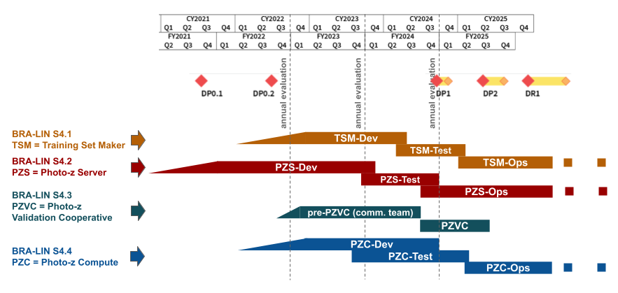

BRA-LIN-S4
In-kind contribution program BRA-LIN-S4 - Photometric Redshifts.
Introduction
This page describes the in-kind contributions offered by the Laboratório Interinstitucional de e-Astronomia (LIneA) to Vera C. Rubin Observatory, approved as part of the in-kind contribution program BRA-LIN. This is a live document that started with the description of planned work. It is regularly updated to offer a high-level description of the software produced as long as the program evolves. Technical documentation of each piece of software should be delivered together with the code in the respective repositories. For comments or suggestions, please open an issue here.
Section 4 of the BRA-LIN proposal refers to the contributions related to Photometric Redshifts. It is organized into four subsections (click for more details):
- S4.1 - PZ Training Set Maker
- S4.2 - PZ Server
- S4.3 - PZ Validation Cooperative
- S4.4 - PZ Tables as Federated Datasets
Related documents
-
BRA-LIN S4 annual evaluation report FY2024 (soon)
Project Management on GitHub
-
S4.3 - PZ Validation Cooperative (start in 2024)
Timeline

BRA-LIN S4 Timeline revised on October 2023 based on LSST Timeline version published on March 2023 on the Rubin Observatory's website.
LIneA Key Personnel
- Proposal lead: Luiz Nicolaci da Costa
- Program manager: Julia Gschwend
- Contribution lead of BRA-LIN-S4: Julia Gschwend (contact: julia at linea dot org dot br)
- Software developers: Cristiano Singulani, Glauber Costa Vila-Verde, Henrique Dante
- System analyst: Carlos Adean
- Undergrad student: Heloisa Mengisztki
Rubin Observatory Key Personnel
- Primary recipient group: Rubin Photo-z Coordination Group (Contact point: Melissa Graham)
- In-kind Program Coordinators (IPCs) for Software Development and Science Collaboration interactions in the Rubin Operations Director’s Office: Agnès Ferté, Aprajita Verma, Greg Madejski